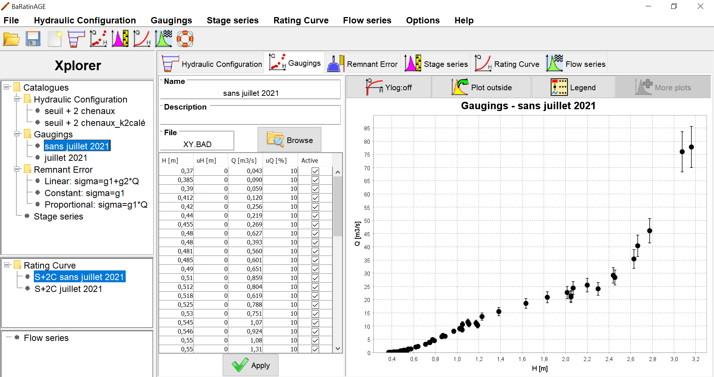

Creating a set of gaugings
You can create a set of gaugings in several ways:
- via the Gaugings...Add menu;
- via the Ctrl+J shortcut;
- by making a right click on the node "Gaugings" in the xplorer tree;
- by clicking the button
in the tool bar.
You will be asked to name this new set of gaugings, and you can enter a description.
You will then have to import the gaugings file by clicking the "Browse" button and
selecting the file. For example, you can select the file
"Sauze_gaugings.csv" in the "exemple" directory, which contains 38 gaugings for the Ardèche river at Sauze station.
The panel then updates as follows:

The gaugings table contains the following columns:
- Stage in metres;
- Expanded stage uncertainty, in meters. In most cases we suggest to set it to zero (see this document
for further discussion);
- Discharge in cubic meters per second;
- Expanded discharge uncertainty, in percentage of the discharge;
- Status of the gauging: if the box is unchecked, the gauging will not be used for
estimation of the rating curve.
File formats
When importing a gauging file, you can choose between two file formats:
.csv and .BAD formats.
- .csv format: it uses a semicolon separator (you can open
the "Sauze_gaugings.csv" file in your text editor to observe the format).
The file content is exactly what you see in the BaRatinAGE table shown above
(In the last column, the check boxes are replaced by 0/1). The simplicity of
this format allows you to easily create/manipulate gauging files with your favorite spreadsheet.
- .BAD format: This format is retained for reasons of compatibility with the software Barème
and with older versions of BaRatinAGE. Indeed you can export from Barème a set of
gaugings at the .BAD format. However, we advise not to directly manipulate this type of
file with your spreadsheet, because the content of the file is not the same as what you
see in the BaRatinAGE table. To be more specific: the uncertainties are there all expressed
as standard-deviations (not as expanded uncertainty) and in absolute values (not in percentage of discharge).
Notes on the management of gaugings in BaRatinAGE
At present, the management of gaugings in BaRatinAGE is rudimentary:
the only possible edition is the activation/deactivation of a gauging. If you want to change
a value or add a gauging, you must modify the source file. The reason is that there are already
specialised software for managing gaugings (e.g. Barème in France), and we prefer ensuring
the compatibility with such software, rather than re-inventing the wheel. However,
we will implement some simple tools in future versions of BaRatinAGE
(input and edition of gaugings, inclusion of dates and measurement methods, elementary filters).